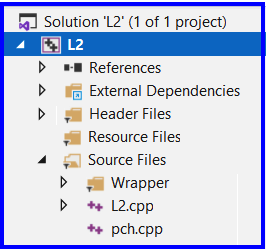
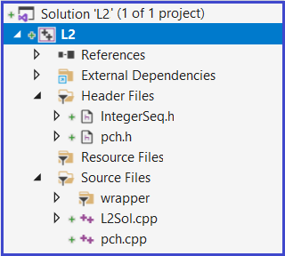
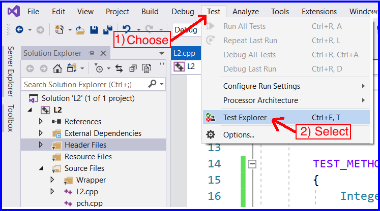
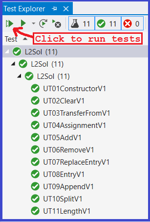
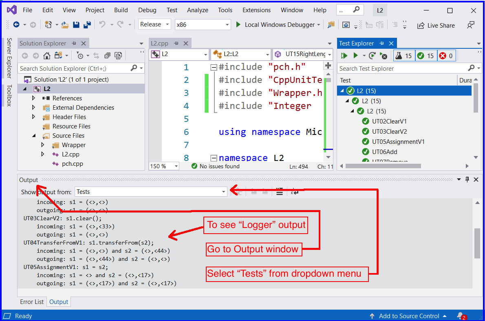
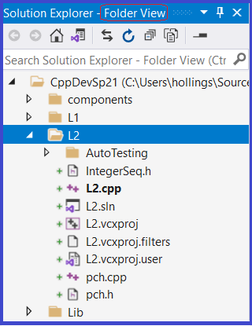
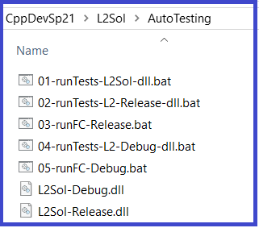

Setup Part 1)Create a VS2019 unit test project called: L2
When you are finished with the 3 steps above your L2 unit test project should look like the screen shot to the right |
 |
Setup Part 2)Create IntegerSeq.h
|
|
Setup Part 3)In Visual Studio, add the IntegerSeq.h file to the Header Files folder
When you are finished with the 3 steps above your L2 unit test project should look like the screen shot to the right |
 |
Setup Part 4)Edit the file IntegerSeq.h
|
|
Setup Part 5)Edit the top of the file L2.cpp by adding the following 6 lines #include "Wrapper.h" #include "IntegerSeq.h" #ifndef NDEBUG #define IsTrue(a,b) IsTrue(a,b); Logger::WriteMessage(b); #endif When you are finished, the file should look like L2.cpp file should look like the following: |
#include "pch.h"
#include "CppUnitTest.h"
#include "Wrapper.h"
#include "IntegerSeq.h"
#ifndef NDEBUG
#define IsTrue(a,b) IsTrue(a,b); Logger::WriteMessage(b);
#endif
using namespace Microsoft::VisualStudio::CppUnitTestFramework;
namespace L2
{
TEST_CLASS(UnitTest1)
{
public:
TEST_METHOD(TestMethod1)
{
// TODO: Your test code here
}
};
} |
Build your project
UT01ConstructorV1: Sequence4(); outgoing: s1 = <> UT02ClearV1: s1.clear(); incoming: s1 = <> outgoing: s1 = <> UT03TransferFromV1: s1.transferFrom(s2); incoming: s1 = <> and s2 = <> outgoing: s1 = <> and s2 = <> UT04AssignmentV1: s1 = s2; incoming: s1 = <> and s2 = <> outgoing: s1 = <> and s2 = <> UT05AddV1: s1.add(pos, k); incoming: s1 = <> and pos = 0 and k = 15 outgoing: s1 = <15> and pos = 0 and k = 0 UT06RemoveV1: s1.remove(pos, k); incoming: s1 = <10,20,30> and pos = 1 and k = 0 outgoing: s1 = <10,30> and pos = 1 and k = 20 UT07ReplaceEntryV1: s1.replaceEntry(pos, k); incoming: s1 = <10,20,30> and pos = 2 and k = -30 outgoing: s1 = <10,20,-30> and pos = 2 and k = 30 UT08EntryV1: s1.entry(pos); incoming: s1 = <10,20,30> and pos = 2 outgoing: s1 = <10,20,30> and pos = 2 UT09AppendV1: s2.append(s1); incoming: s1 = <30,40> and s2 = <10,20> outgoing: s1 = <> and s2 = <10,20,30,40> UT10SplitV1: s2.split(pos, s1); incoming: s1 = <-30> and pos = 1 and s2 = <10,20,30,40> outgoing: s1 = <20,30,40> and pos = 1 and s2 = <10> UT11LengthV1: s1.length(); incoming: s1 = <> outgoing: s1 = <> |
First open the Test Explorer Window

From the Test Explorer Window, click the Run All link

To see output from running unit tests

3.1) Install AutoTesting Folder
When finished and the next time you start up VS2019 your Folder View for L2 will look like the screen shot to the right. |
 |
3.2) Generating solution output
|
 |
Work on differences in Release configuration
Note about working in Debug configuration
When in Debug configuration, the following macro, IsTrue, is defined
#ifndef NDEBUG #define IsTrue(a,b) IsTrue(a,b); Logger::WriteMessage(b); #endif
This preprocessor directive causes a text substitution on your unit tests' usage of Assert::IsTrue
Here is an example:
If your unit test has the following Assert
Assert::IsTrue(x1 == "<15>", L"s1 = <15>");
When in Debug configuration (but not in Release configuration), it will be modified by the macro to become:
Assert::IsTrue(x1 == "<15>", L"s1 = <15>");
Logger::WriteMessage(L"s1 = <15>");
The difference being that a Logger::WriteMesage with IsTrue's 2nd parameter is also executed. This causes additional logger output showing what was asserted to be true by each Assert::IsTrue
Work on differences in Debug configuration